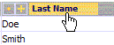
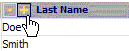

| Усовершенствованный поиск |
|
Усовершенствованный поиск стал легче
Вы можете увеличить точность своих поисковых запросов, добавляя
операторы, которые уточняют запросы с ключевыми словами и числами. Все опции
перечисленные на этой странице могут быть введены непосредственно в окно поиска.
Основы
Вы можете ввести слово/число или выражение, например, 'Miller', '> 500' или '>=
Smith', после чего
| • кликнуть по заголовку колонки для поиска объектов
соответствующих значениям этого атрибута (все объекты ищутся
независимо от установленного текущего набора фильтров и существующие результаты поиска будут потеряны) |
New Search
 |
| • кликнуть по кнопке [+] для поиска объектов
соответствующих значениям этого атрибута (только объекты, содержащиеся в результатах
предыдущего поиска в соответствии с набором фильтров будут найдены,
например, 'добавление' этого поиска вернет более ограниченный набор результатов) |
Добавить условие
 |
Операторы
Поддерживаются следующие операторы (заметим, однако, что не все базы данных поддерживают все операторы):
- похож [sounds like] (*)
- подобен [like] (%), оператор по умолчанию для строковых запросов
- равен [equal] (=), оператор по умолчанию для boolean, number, и code
запросов
- не равен [not equal] (<>, !=)
- меньше (<)
- меньше или равен (<=)
- больше (>)
- больше или равен (>=)
"AND" запросы
чтобы найти объекты, которые соответствуют больше чем одному условию одновременно,
используйте амперсанд "&" между условиями. Например, чтобы найти объекты
со значениями между 500 и 1000 (т.е. больше чем 500 и меньше 1000), просто наберите: '>500 & <1000'
"OR" запросы
Чтобы найти объекты, которые включают
или слово A или слово B, используйте точку с запятой ";" между значениями. Например,
чтобы найти контакты с именами 'Smith' ИЛИ 'Miller', просто наберите: '= Smith; Miller'
Сложные запросы
Вы можете объединить запросы фактически без ограничений. Например, чтобы найти
объекты со значениями меньше чем '1000', но отличающиеся от '500' и от '600',
просто наберите: '<>500; 600 & <1000'
Правила синтаксического анализа для сложных запросов следующие:
- searchExpr ::= filterValue { & filterValue }
(--> разбивщик строк с & как разделителем)
- filterValue ::= [operator] value { ; value }
(--> разбивщик строк с ; как разделителем)
Поиск по маске
Ряд баз данных допускают поиск по маске. В этом случае, Вы можете выполнять поиск по всем контактам с именами, содержащими 'ller' (например, Miller, Mueller, и т.д.) набрав: '%%ller'
ВНИМАНИЕ: поиск по маске может потребовать много времени, если БД специально не оптимизирована (потребуется полный перебор таблицы)!